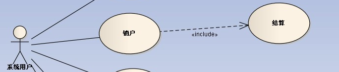
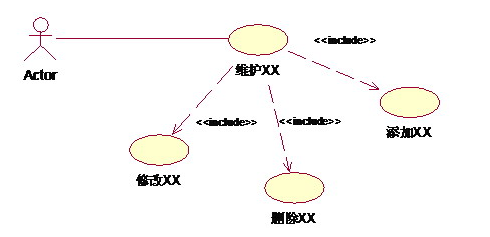
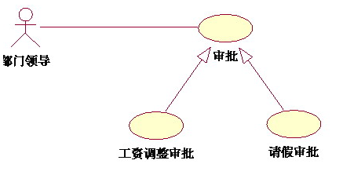
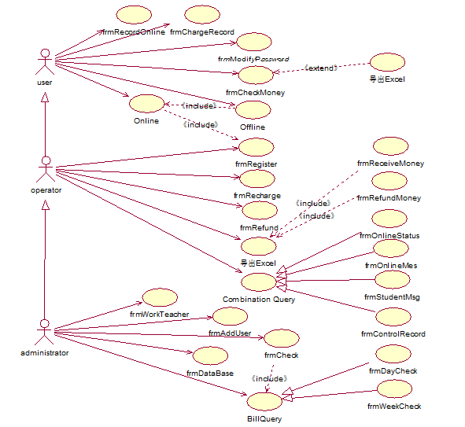

用例之间可以抽象出包含(include)、扩展(extend)和泛化(generalization)几种关系。
共性：都是从现有的用例中抽取出公共的那部分信息，作为一个单独的用例，然后通后过不同的方法来重用这个公共的用例，以减少模型维护的工作量。
用例间的关系
1,Extend
个人理解 即丰富这个用例的功能
例如，系统中允许用户对查询的结果进行导出、打印。对于查询而言，能不能导出、打印查询都是一样的，导出、打印是不可见的。导入、打印和查询相对独立，而且为查询添加了新行为。因此可以采用扩展关系来描述：

2，Include
include有三种情况
a,两个用例之间执行谁之前要执行谁,即用例间的先后关系
销户：因为销户必需先进行账户结算，所以这里用include

b,抽象出一个具体地功能,其他用例包含这个功能
由于业务开通、重保、割接及其它跨省的业务都需要用到数据分发用例，我们可以将数据分发用例单独抽出来，供各业务使用，这里用include就比较合适
c,简化用例的描述
业务中，总是存在着维护某某信息的功能，如果将它作为一个用例，那新建、编辑以及修改都要在用例详述中描述，过于复杂；如果分成新建用例、编辑用例和删除用例，则划分太细。这时包含关系可以用来理清关系。

3,泛化
泛化即继承即抽象关系.与包含关系的第二类不同的是子类中有父类的属性和方法,但包含中是将这部分内容抽象出来了.

注:包含是功能的一部分被整个功能包含,泛化是对整个功能的抽象,没有部分,扩展就是对功能的丰富,有与无无所谓.
对于机房收费系统来说：
